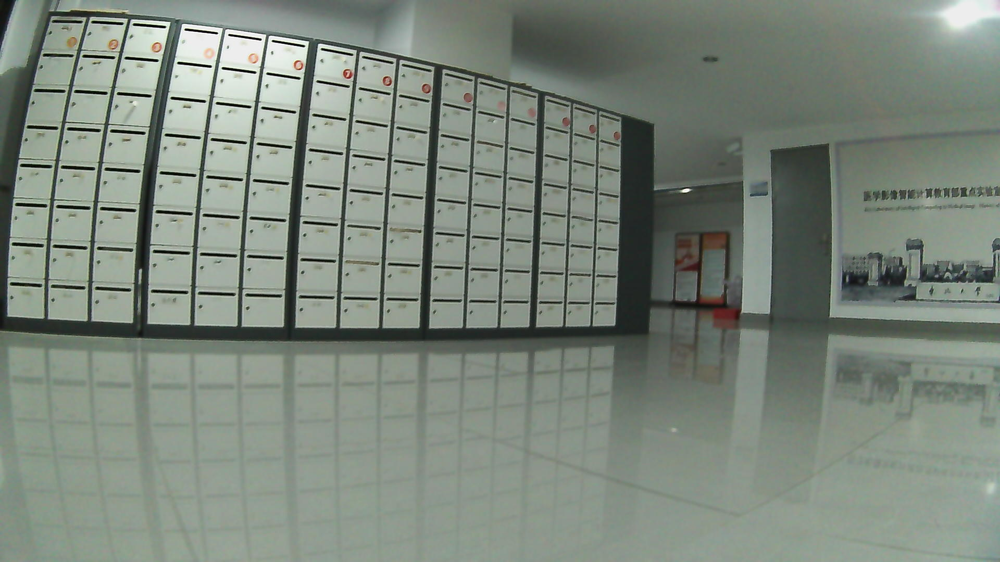

Go2 Collector
Recorded offline preview · real RGB capture
Front RGB

Source: repaired real Go2 session · RGB frame
Collection status
Scene corridor_a
Instruction go to the target
Mode teleoperation capture
Review queued for operator audit
Controls are disabled in this static showcase.